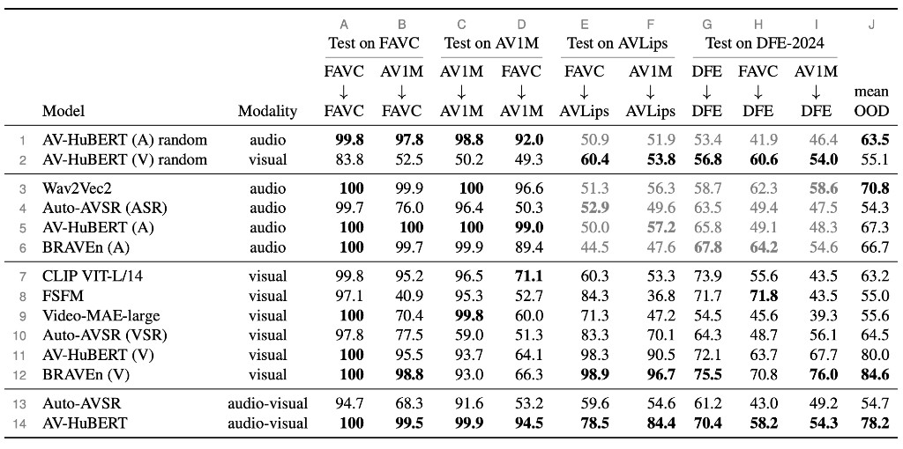
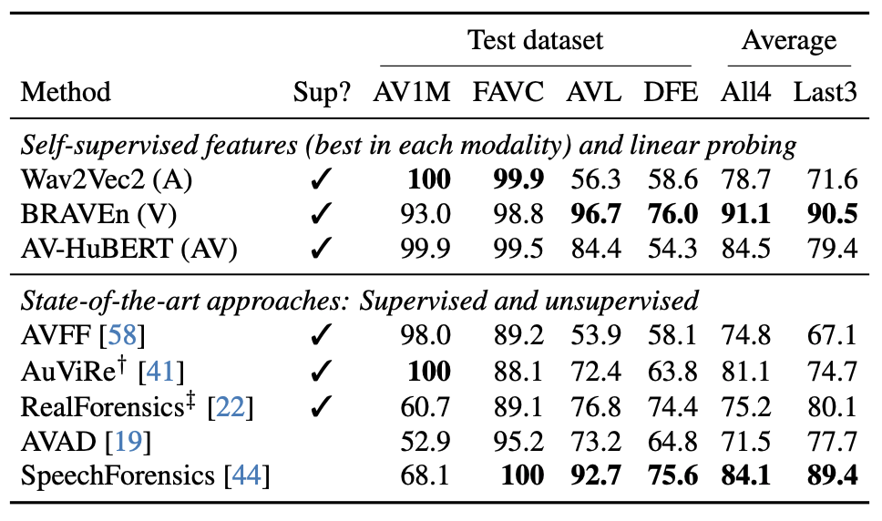
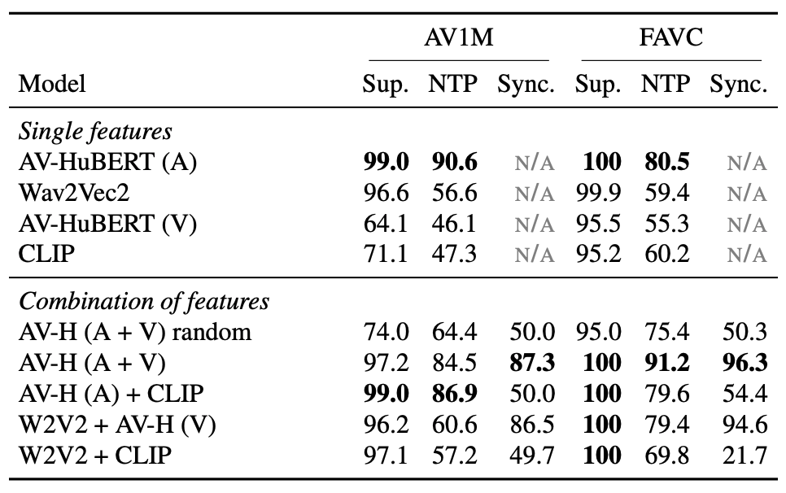
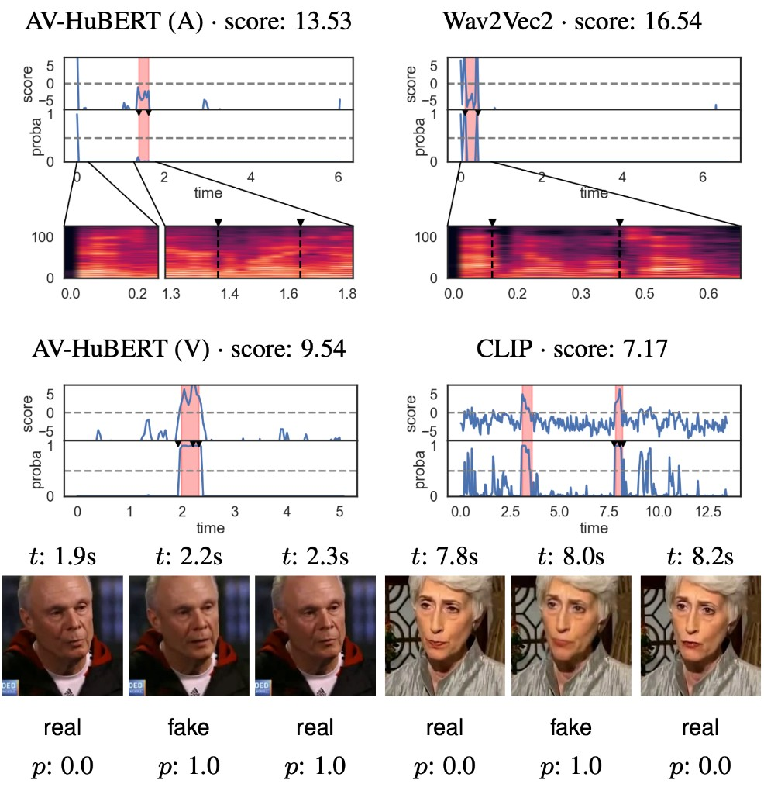
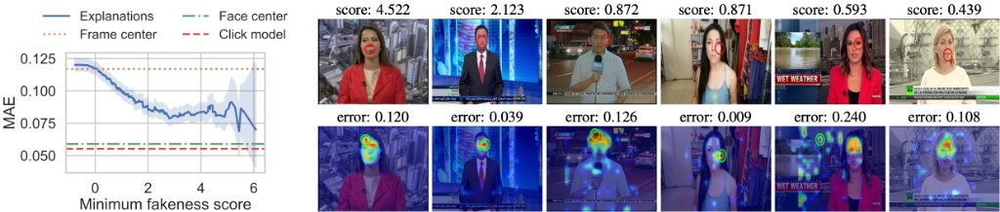
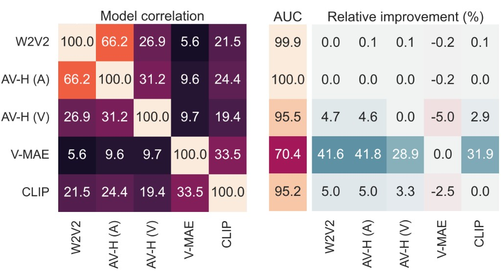

Poster

Click the thumbnail to open the full PDF.
Self-supervised representations excel at many vision and speech tasks, but their potential for audio-visual deepfake detection remains underexplored. Unlike prior work that uses these features in isolation or buried within complex architectures, we systematically evaluate them across modalities (audio, video, multimodal) and domains (lip movements, generic visual content). We assess three key dimensions: detection effectiveness, interpretability of encoded information, and cross-modal complementarity. We find that most self-supervised features capture deepfake-relevant information, and that this information is complementary. Moreover, models primarily attend to semantically meaningful regions rather than spurious artifacts (such as the leading silence). Among the investigated features, audio-informed representations generalize best and achieve state-of-the-art results. However, generalization to realistic in-the-wild data remains challenging. Our analysis indicates this gap stems from intrinsic dataset difficulty rather than from features latching onto superficial patterns.

Table 2: Area under curve (AUC, %) of linear probes trained on different representations and evaluated in (columns A, C, G) and out of domain (other columns). AVLips and DFE-2024 lack or have incomplete audio manipulations, hence the gray values for the audio features.

Table 3: Comparison to state of the art. AUC (%) when training on the AV1M dataset (23k samples). We report average score across all datasets (All4) and without AV1M (Last3). Legend: † trained on the full AV1M training set (746k samples); ‡ trained on FF++.

Table 4: AUC performance (%) on AV1M and FAVC of supervised (sup.) and anomaly detection models: next-token prediction (NTP) and audio-video synchronization (sync.). Supervised models are trained cross-domain, while anomaly detection models are trained on real data only. Supervised models of feature combinations use late fusion (average of predictions).

Figure 3: Temporal explanations of the top video predictions for four SSL representations. The predictions are given in terms of unnormalized scores (logits) and probabilities. Red regions indicate fake segments, and gray dashed lines correspond to the decision boundary (0.5 probability). For audio models we show Mel spectrograms; for vision models we show three frames (corresponding to the triangle markers on the line plot).

Figure 4: Alignment of spatial explanations to human annotations. Left: Alignment error in terms of mean absolute error (MAE) as a function of the model confidence (fakeness score). The explanations align better to human annotations as the model is more confident in its predictions. Right: Qualitative samples human annotation shown as the center of the red circle on top frame, and explanation of the CLIP-based model shown on bottom frame (maximum value indicated by the green circle).

Figure 5: Correlations between models (left) and downstream performance (right). The downstream performance is presented in absolute values for the unimodal models (AUC column) and as relative improvement for feature combinations. Training was done on AV1M, testing on FAVC.
Click the thumbnail to open the full PDF.
@InProceedings{ssr-dfd,
title={Investigating Self-Supervised Representations for Audio-Visual Deepfake Detection},
author={Boldisor, Dragos-Alexandru and Smeu, Stefan and Oneata, Dan and Oneata, Elisabeta},
booktitle={Proceedings of the IEEE/CVF Conference on Computer Vision and Pattern Recognition (CVPR)},
year={2026}
}